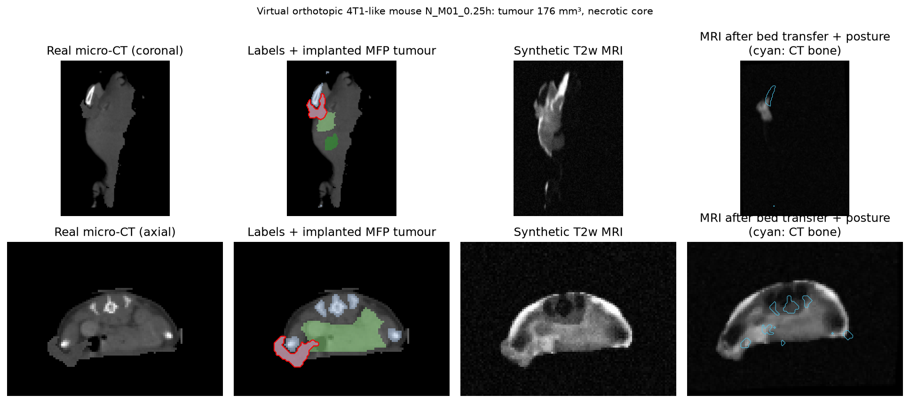
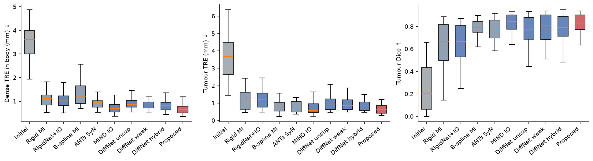
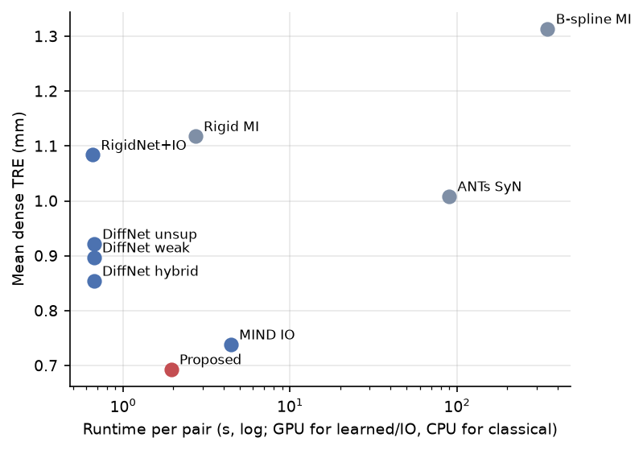
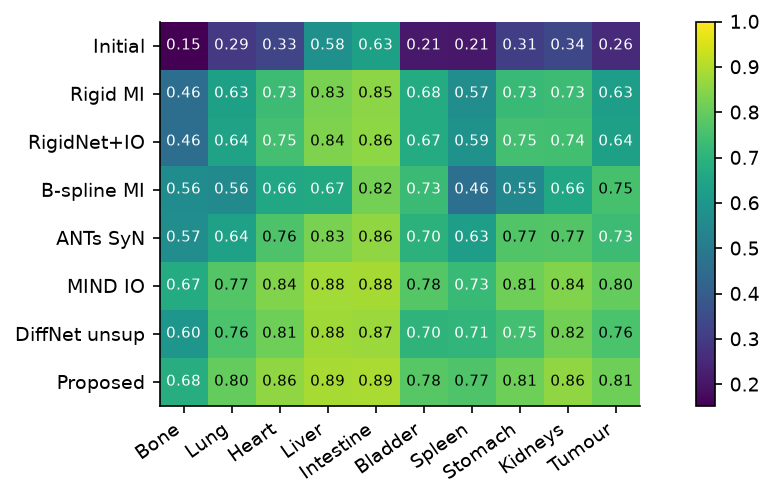
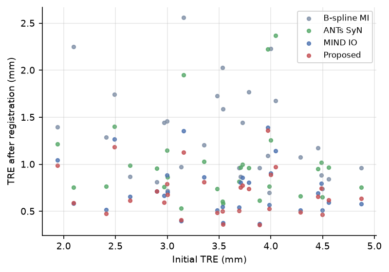
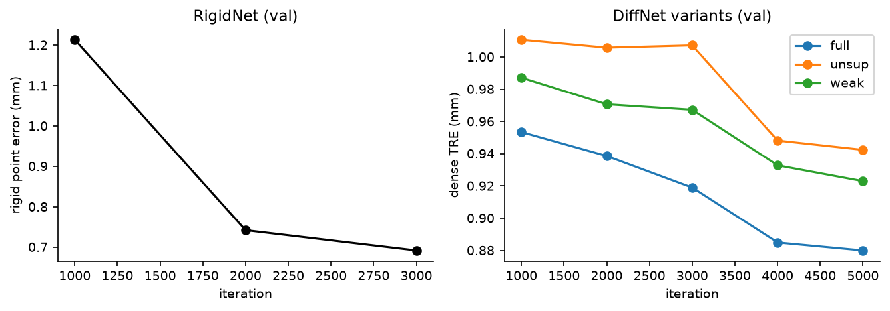
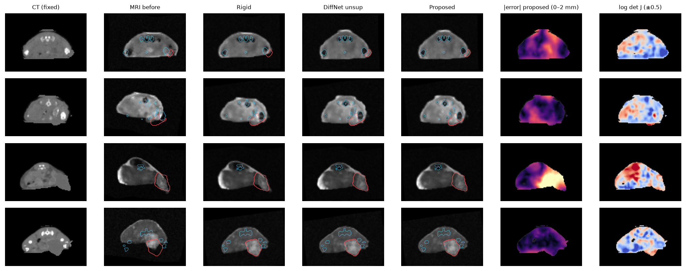

Headline
0.69 mmdense registration error (initial 3.4 mm), 58 held-out pairs
0.81 mmerror at the orthotopic tumour; tumour Dice 0.79 (all 58 test pairs)
0 %folding: diffeomorphic by construction
2 sper animal, vs 88 s for ANTs SyN and 6.5 min for B-spline FFD
p = 4e-9more accurate than ANTs SyN (paired Wilcoxon, 29 scans)
Real micro-CT→orthotopic tumour + synthetic T2w MRI→known misalignment→RigidNet + IO→anatomy-aware DiffNet→MIND-SSC refinement
Most of the accuracy comes from per-pair optimisation of modality-independent MIND-SSC features. The learned prior makes that optimisation 2.3× faster and consistently more accurate (better on 26 of 29 scans).
Results (30 paired test pairs)
| Method | Dense TRE (mm) | Tumour TRE (mm) | Tumour Dice | Organ Dice | Folding % | Time (s) |
|---|---|---|---|---|---|---|
| Initial (no registration) | 3.52 ± 0.74 | 3.68 ± 1.30 | 0.257 ± 0.211 | 0.342 ± 0.100 | – | – |
| Rigid MI (SimpleITK) | 1.12 ± 0.38 | 1.26 ± 0.57 | 0.629 ± 0.199 | 0.696 ± 0.086 | 0.000 ± 0.000 | 2.8 ± 0.6 |
| RigidNet (learned, 1 pass) | 1.23 ± 0.37 | 1.41 ± 0.57 | 0.590 ± 0.207 | 0.668 ± 0.083 | – | 0.0 ± 0.2 |
| RigidNet + MIND IO | 1.08 ± 0.36 | 1.24 ± 0.53 | 0.635 ± 0.196 | 0.703 ± 0.080 | – | 0.8 ± 0.6 |
| Rigid + B-spline FFD, MI (SimpleITK) | 1.31 ± 0.50 | 0.85 ± 0.38 | 0.752 ± 0.145 | 0.652 ± 0.107 | 1.428 ± 2.873 | 390.1 ± 130.2 |
| ANTs SyNRA (MI) | 1.01 ± 0.44 | 1.01 ± 0.99 | 0.733 ± 0.184 | 0.732 ± 0.081 | 0.000 ± 0.000 | 88.3 ± 22.9 |
| Rigid + MIND-SSC IO only (ConvexAdam-style) | 0.74 ± 0.27 | 0.75 ± 0.45 | 0.800 ± 0.146 | 0.807 ± 0.057 | 0.000 ± 0.000 | 4.6 ± 0.7 |
| DiffNet unsupervised (VoxelMorph-style) | 0.92 ± 0.26 | 1.02 ± 0.45 | 0.759 ± 0.131 | 0.778 ± 0.049 | 0.000 ± 0.000 | 0.8 ± 0.6 |
| DiffNet unsup + IO | 0.71 ± 0.24 | 0.76 ± 0.44 | 0.805 ± 0.114 | 0.818 ± 0.042 | 0.000 ± 0.000 | 2.1 ± 0.6 |
| DiffNet weakly sup. (+Dice) | 0.90 ± 0.26 | 0.98 ± 0.41 | 0.781 ± 0.127 | 0.819 ± 0.046 | 0.000 ± 0.000 | 0.8 ± 0.6 |
| DiffNet anatomy-aware hybrid (+Dice+GT flow) | 0.85 ± 0.27 | 0.91 ± 0.39 | 0.777 ± 0.122 | 0.807 ± 0.051 | 0.000 ± 0.000 | 0.8 ± 0.6 |
| Proposed: hybrid DiffNet + IO refinement | 0.69 ± 0.24 | 0.72 ± 0.40 | 0.814 ± 0.102 | 0.823 ± 0.043 | 0.000 ± 0.000 | 2.1 ± 0.6 |
| Oracle (interpolation ceiling) | 0.00 ± 0.00 | 0.00 ± 0.00 | 0.974 ± 0.021 | 0.977 ± 0.012 | – | – |
The learned and IO methods ran on an A100 GPU; the classical methods ran on CPU with 2 threads. All values are mean ± SD over pairs.
Figures







This is a research prototype on simulated MRI; it is not validated for regulatory or clinical use. Micro-CT data: Rosenhain et al., Sci. Data 5:180294 (2018), CC BY 4.0. © 2026 Husain Naqvi. All Rights Reserved.